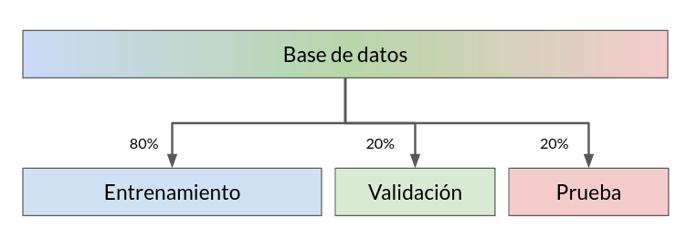
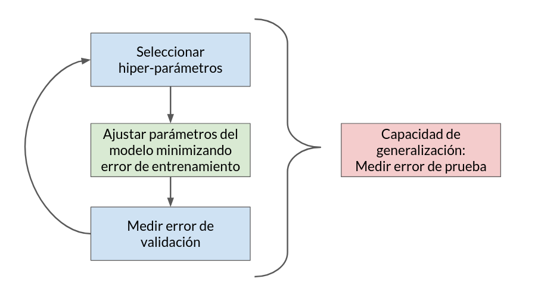

%matplotlib inline
import matplotlib.pyplot as plt
import numpy as np
import pandas as pd
from IPython.display import YouTubeVideo
from functools import partial
YouTubeVideo_formato = partial(YouTubeVideo, modestbranding=1, disablekb=0,
width=640, height=360, autoplay=0, rel=0, showinfo=0)
2. Regresión lineal, Sobreajuste y Validación¶
2.1. Introducción¶
Una regresión consiste en ajustar un modelo paramétrico del tipo
El ajuste de este modelo nos permite
Entender como dos o más variables se relacionan
Predecir una variable en función de otras
Estos son los objetivos del análisis de regresión
Hablamos particularmente de regresión lineal cuando el modelo \(f_\theta\) es lineal en sus parámetros. Es decir que lo podemos escribir como
donde \(x\) representa los atributos (variables independientes) y \(\theta\) los parámetros a ajustar. Ajustar el modelo se refiere a encontrar el valor óptimo de \(\theta\). Como vimos la clase pasada
Si nuestro sistema es cuadrado podemos usar inversión
Si nuestro sistema es rectangular podemos usar mínimos cuadrados
El ajuste del modelo se realiza en base a datos, que podemos visualizar como un conjunto de \(N\) tuplas \((\vec x_i, y_i)\) con \(i=1,2,\ldots,N\). Por otro lado la cantidad parámetros del modelo es \(M\), es decir el largo del vector \(\theta\).
Luego
Cada tupla o ejemplo aporta una ecuación al sistema
Cada parámetro aporta una incognita al sistema
A continuación generalizaremos algunos conceptos vistos en Algebra lineal con NumPy
2.2. Regresión lineal multivariada¶
En la lección anterior ajustamos el modelo
con dos parámetros y una variable independiente. El modelo anterior corresponde al modelo lineal más básico: una recta.
En un caso más general podríamos querer ajustar un modelo con un \(x\) multidimensional
Si tenemos \(d\) atributos podemos construir un vector \(\vec x = (x_1, x_2, \ldots, x_d)\) y considerar el siguiente modelo lineal
Esto corresponde a ajustar un hiperplano
2.2.1. Ejercicio práctico¶
Para los datos de consumo de helados, encuentre los parámetros del hiperplano que ajuste mejor los datos
Identifique y construya el vector \(b\) y la matriz \(A\) ¿Cuánto vale \(N\) y \(M\)?
¿Es este un sistema cuadrado o rectangular? ¿ Es sobre o infra-determinado?
Encuentre \(\theta\) que minimiza la suma de errores cuadráticos
Grafique el plano encontrado
Solución paso a paso con comentarios
YouTubeVideo_formato('h6KrwiQv5qU')
2.3. Modelos lineales en sus parámetros pero no en sus entradas¶
Una regresión lineal puede considerar transformaciones “no lineales” sobre la entrada \(x\). Llamaremos función base \(\phi_j(\cdot)\) a estas transformaciones.
Luego el modelo más general de regresión lineal en sus parámetros es
El modelo sigue siendo lineal en sus parámetros. Por ende lo podemos ajustarnos con las mismas herramientas que vimos anteriormente. La ventaja de usar funciones base es que el modelo es más flexible, es decir que podemos modelar comportamientos más diversos en los datos.
Veamos algunos ejemplos concretos de regresión lineal con funciones base
Ejemplo 1: Regresión polinomial
Si usamos \(\phi_j(x) = x^j\) tendríamos
que nos puede servir cuando la relación entre las variables es cuadrática, cúbica o de orden superior
Ejemplo 2: Regresión trigonométrica
Si usamos \(\phi_j(x) = \cos(2\pi j x)\) tendríamos
que nos puede servir si queremos modelar funciones periódicas pares. Si usamos seno en lugar de coseno podríamos modelar funciones periódicas impares. Si usamos una combinación de seno y coseno podríamos modelar cualquier función periódica (serie de Fourier)
2.3.1. Ejercicio práctico¶
Considere los siguientes datos:
np.random.seed(1234)
x = np.linspace(0, 2, num=10)
y = 2*np.cos(2.0*np.pi*x) + np.sin(4.0*np.pi*x) + 0.4*np.random.randn(len(x))
x_plot = np.linspace(np.amin(x), np.amax(x), num=100)
Realice una regresión polinomial sobre \((x, y)\)
Muestre graficamente los datos y el resultado de \(f_\theta(x_{plot})\)
Use Jupyter widgets para modificar dinamicamente el grado del polinomio entre \(M\in[1, 15]\)
Solución paso a paso con comentarios
YouTubeVideo_formato('KvIyri8lVq4')
¿Qué ocurre cuando \(N\geq M\)?
Nuestro modelo se sobre ajusta a los datos
Estudiaremos esto en detalle más adelante
2.4. Sistema infradeterminado (caso \(N>M\))¶
El caso del sistema infradeterminado es aquel que tiene más incognitas (parámetros) que ecuaciones. Este tipo de sistema tiene infinitas soluciones
Considere por ejemplo las soluciones posibles de ajustar un sistema polinomial de segundo orden (tres parámetros) con sólo dos ejemplos
x = np.array([-2, 2])
y = np.array([4, 4])
fig, ax = plt.subplots(figsize=(6, 4), tight_layout=True)
x_plot = np.linspace(-3, 3, num=100)
thetas = np.zeros(shape=(200, 3))
for i, a in enumerate(np.linspace(-10, 10, num=thetas.shape[0])):
ax.plot(x_plot, a + (1 - a/4)*x_plot**2)
thetas[i:] = [a, 0, (1-a/4)]
ax.scatter(x, y, s=100, c='k', zorder=10);
Más en la práctica, la consecuencia de que el sistema sea infradeterminado es que \(A^T A\) no es invertible.
Para resolver el problema infradeterminado se debe una restricción adicional. La más típica es que el vector solución tenga norma mínima, por ejemplo
que se resuelve usando \(M\) multiplicadores de Lagrange \(\lambda\) como sigue
De donde obtenemos que \(\lambda = 2(AA^T)^{-1}b\) y por lo tanto \(x = \frac{1}{2} A^T \lambda = A^T (A A^T)^{-1} b\), donde \(A^T (A A^T)^{-1}\) se conoce como la pseudo-inversa “por la derecha”
La función np.linalg.lstsq usa la pseudo inversa izquierda automáticamente si \(N<M\) o la pseudo inversa derecha si \(N>M\)
Es decir que NumPy asume que la mejor solución del sistema infradeterminado es la de mínima norma euclidiana
2.5. Complejidad, sobreajuste y generalización¶
Un modelo con más parámetros es más flexible pero también más complejo
Complejidad: grados de libertad de un modelo
Como vimos en el ejercicio práctico anterior un exceso de flexibilidad puede producir un “ajuste perfecto”. Un ajuste perfecto es generalmente una mala idea pues nuestros datos casi siempre tendrán ruido
Sobreajuste: Ocurre cuando el modelo se ajusta al ruido de los datos
Considere los siguientes datos ajustados con tres modelos de distinta complejidad
x = np.linspace(-3, 3, num=10)
x_plot = np.linspace(np.amin(x), np.amax(x), num=100)
y_clean = np.poly1d([2, -4, 20]) # 2*x**2 -4*x +20
np.random.seed(1234)
y = y_clean(x) + 3*np.random.randn(len(x))
poly_basis = lambda x, M : np.vstack([x**k for k in range(M)]).T
fig, ax = plt.subplots(1, 3, figsize=(8, 3),
tight_layout=True, sharex=True, sharey=True)
for i, (M, title) in enumerate(zip([2, 3, 10], ["muy simple", "adecuado", "muy complejo"])):
ax[i].plot(x_plot, y_clean(x_plot), lw=2, alpha=.5, label='Modelo real')
ax[i].scatter(x, y, label='observaciones');
theta = np.linalg.lstsq(poly_basis(x, M), y, rcond=None)[0]
ax[i].plot(x_plot, np.dot(poly_basis(x_plot, M), theta), 'k-', label='Modelo apredido')
ax[0].legend()
ax[i].set_title(title)
Del ejemplo podemos ver que cuando el modelo se sobreajusta pierde capacidad de generalización
Generalización: Capacidad de predecir adecuadamente los datos que no se usan en el ajuste
Los siguientes mecanísmos se pueden usar para evitar el sobreajuste y mejorar la capacidad de generalización
Validación: Escoger la complejidad mediante pruebas de validación
Regularización: Penalizar la complejidad de forma adicional
Se revisará en detalle la primera opción
2.5.1. Introducción a las técnicas de validación cruzada¶
Validación cruzada es un conjunto de técnicas donde se busca dividir el conjunto de datos en tres subconjuntos
Entrenamiento: Datos que se ocupan para ajustar el modelo
Validación: Datos que se ocupan para calibrar el modelo
Prueba: Datos que se ocupan para comparar distintos modelos
La forma más simple de crear estos subconjuntos es permutar aleatoriamente los índices de los elementos y dividir los índices en distintas proporciones. Tipicamente se usa una proporción 60/20/20 o 80/10/10 dependiendo del tamaño de la base de datos original. Este tipo de validación cruzada se llama hold-out.
{kind=link}
El permutar produce un particionamiento aleatorio que busca que cada subconjunto sea representativo de la base de datos original. Más adelante veremos técnicas de validación cruzada más sofisticadas.
Para evaluar la calidad de nuestro modelo medimos el error en cada uno de estos subconjuntos
El ajuste de los parámetros se realiza minimizando el error de entrenamiento
Calibrar el modelo, es decir seleccionar los mejores hiperparámetros del modelo, se realiza minimizando el error de validación. En el caso particular de la regresión polinomial el hiperparámetro que debemos calibrar es el grado del polinomio.
La capacidad de generalización del modelo final se mide usando el error de prueba
La siguiente figura muestra un esquema iterativo de validación
{kind=link}
Usando este esquema podemos detectar facilmente un modelo sobreajustado ya que presentará un buen desempeño en entrenamiento pero un desempeño deficiente en validación
2.5.2. Ejercicio práctico¶
Considere los siguientes datos
x = np.linspace(-5, 5, num=30)
x_plot = np.linspace(np.amin(x), np.amax(x), num=100)
y_clean = np.poly1d([0.1, -0.3, -2, 10])
np.random.seed(1234)
y = y_clean(x) + 1.5*np.random.randn(len(x))
poly_basis = lambda x, M : np.vstack([x**k for k in range(M)]).T
Considere el modelo de regresión polinomial
Separé los datos \((x,y)\) aleatoriamente para crear conjuntos de entrenamiento y validación. Se recomienda usar la función
np.random.permutationEntrene con el conjunto de entrenamiento
Encuentre el grado de polinomio que mejor ajusta los datos del conjunto de validación en base al error cuadrático medio:
donde \(e_i = y_i - f_\theta(x_i)\)
Solución paso a paso con comentarios
YouTubeVideo_formato('Ydl2g6w3Wog')
2.5.3. (Extra) ¿En qué consiste la regularización?¶
Consiste en agregar una penalización adicional al problema
El ejemplo clásico es agregar que la solución tenga norma mínima
En este caso la solución es
que se conoce como ridge regression o regularización de Tikhonov
\(\lambda\) es un hiper-parámetro del modelo y debe ser escogido por el usuario (usando validación)
2.6. Resumen de la lección¶
En esta lección hemos aprendido a:
Resolver la regresión lineal multivariada
Generalizar la regresión lineal con funciones base (polinomios)
Calibrar nuestros modelos usando técnicas de validación